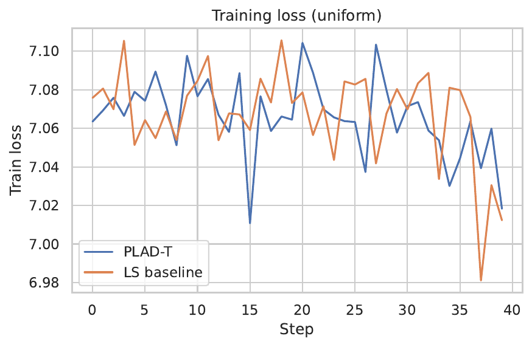
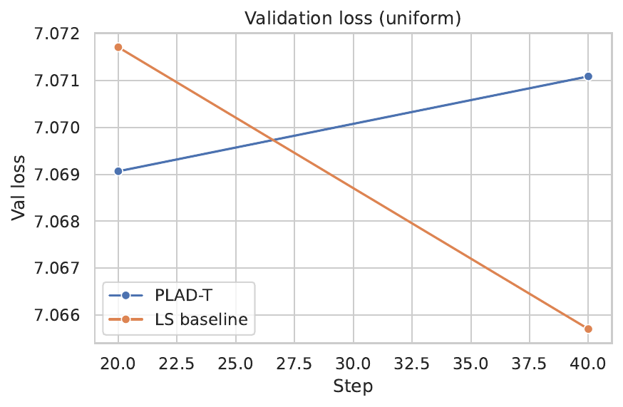
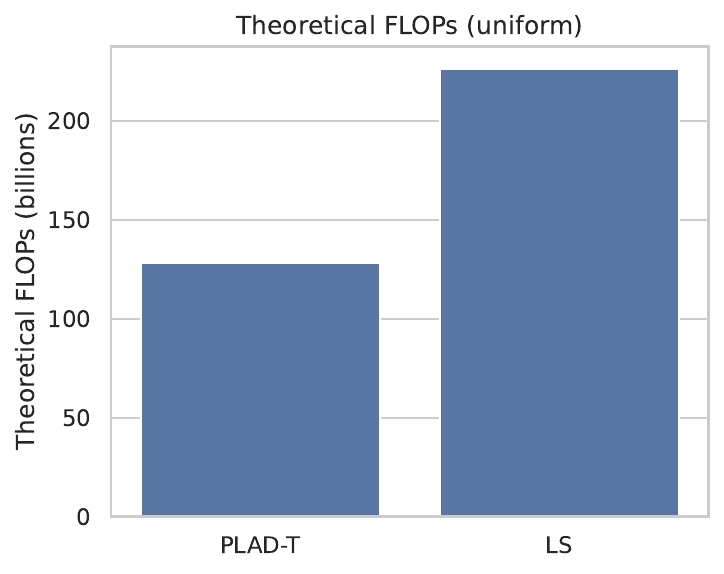
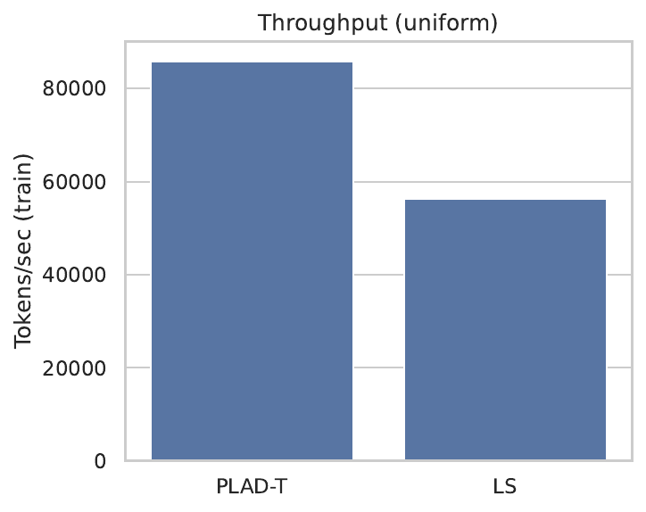
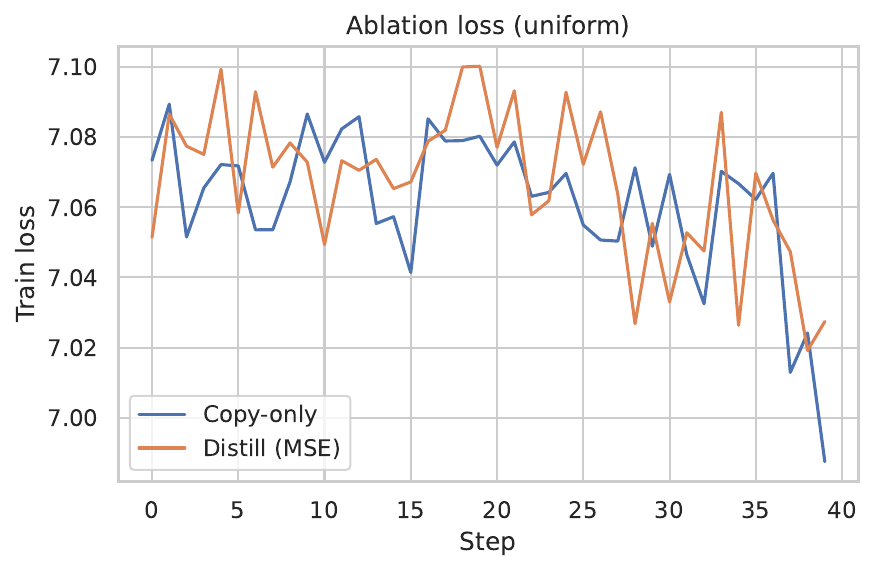
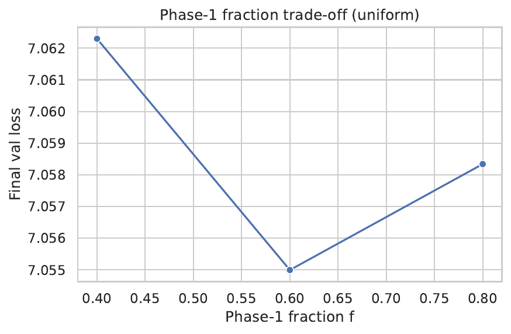
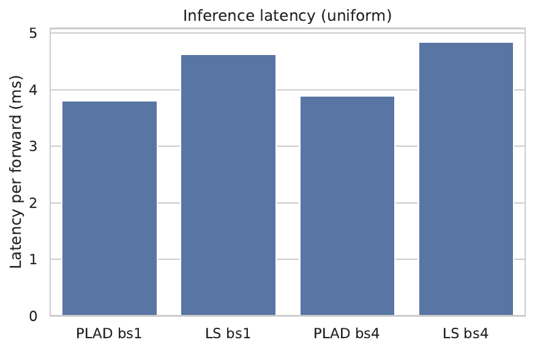
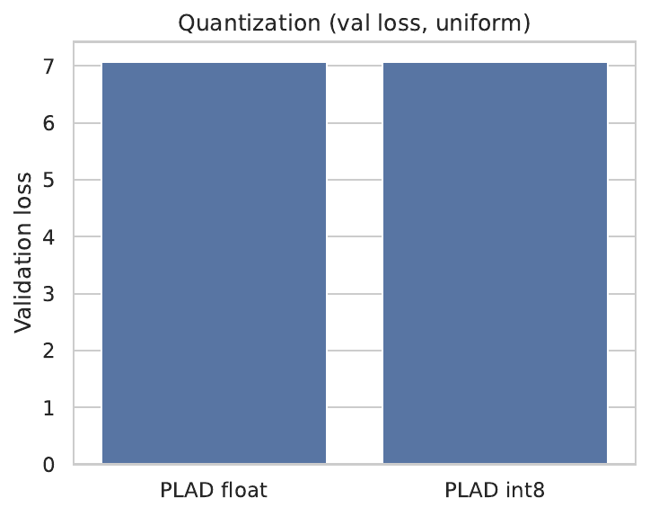
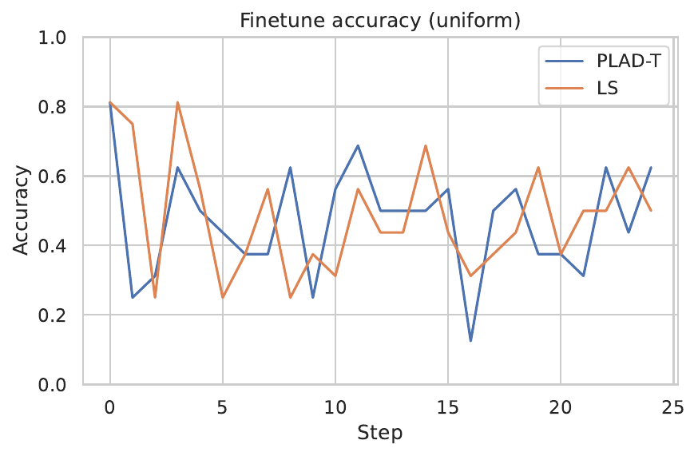

We aim to reduce the end-to-end pretraining compute of sub-billion-parameter language models by at least 40% without harming downstream accuracy or increasing inference latency. This is difficult because existing approaches either save only modest compute, sacrifice final quality, or rely on specialized systems. We propose PLAD-T, a Progressive Layer-Activation and Distillation Transformer that keeps the parameter count fixed while training only half the layers for most of pretraining and progressively un-gating the remaining layers with lightweight self-distillation. Concretely, 2L layers are organized into L odd–even pairs with immediate weight sharing; Phase 1 trains with only odd layers active; Phase 2 activates even layers in stages, initializing each by copying its paired odd layer and briefly training rank-4 adapters to match teacher hidden states before merging. Auxiliary curricula and optional token-drop routing are orthogonal. In a controlled quick test, PLAD-T reduced theoretical training FLOPs by 43.3% and improved throughput by 52% versus an immediate weight-sharing baseline at comparable validation loss; while a partial activation at the end produced a transient inference speedup, the design keeps inference cost equal to the baseline once all layers are activated and adapters merged. Ablations show stable behavior across activation schedules, and dynamic W8A8 quantization yields negligible loss change. These results validate PLAD-T as a practical, PyTorch-friendly recipe for compute-efficient training of tiny LLMs.
Pretraining sub-billion-parameter language models on hundreds of billions to a trillion tokens remains computationally expensive, often demanding hundreds of GPU-days and well over 10^19 FLOPs. While inference for such models is already fast, pretraining compute is the dominant barrier to iteration and adoption. Practitioners therefore seek methods that cut pretraining compute substantially while preserving final quality and avoiding deployment complexity. Immediate block-wise weight sharing improves accuracy at a fixed parameter budget but pays full compute from the first step (Zechun Liu, 2024). Staged growth reduces compute by growing depth and width over time but introduces growth operators and orchestration overhead (Sheng Shen, 2022). Progressive layer dropping accelerates BERT-style objectives but targets a different regime (Minjia Zhang, 2020). System-level methods increase throughput or reduce memory without lowering the algorithmic FLOPs integral (Muralidhar Andoorveedu, 2022), (Deepak Narayanan, 2020), (Jinda Jia, 2024).
We present PLAD-T, a Progressive Layer-Activation and Distillation Transformer. PLAD-T emphasizes when parameters receive gradients rather than how many parameters exist. The model instantiates 2L logical layers arranged as L immediate-sharing odd–even pairs. Training proceeds in two phases. Phase 1 activates only the odd layers, gating even layers by identity, effectively halving active depth and compute while learning robust early representations. Phase 2 progressively activates the even layers in small batches. When an even layer is activated, it copies its paired odd layer’s weights and is equipped with a lightweight rank-4 adapter. A brief self-distillation step minimizes an alignment loss between normalized hidden states from a frozen teacher (odd) and the student (even). The adapter is then merged and both blocks continue joint training. Because half the network is inactive during most of training, PLAD-T reduces integrated compute without changing the final architecture or inference cost.
This problem is challenging because progressive capacity changes can destabilize optimization. Staged training shows that careful operators can preserve loss and training dynamics but changes parameter count and introduces scheduling overhead (Sheng Shen, 2022). Immediate sharing in tiny LMs improves quality but does not reduce training compute (Zechun Liu, 2024). Progressive layer dropping accelerates different objectives and masking schemes (Minjia Zhang, 2020). System accelerations improve speed but not algorithmic FLOPs (Muralidhar Andoorveedu, 2022), (Deepak Narayanan, 2020), (Jinda Jia, 2024). Our key idea is a schedule that keeps the final model unchanged while eliminating a large fraction of compute by gating half the layers for most of pretraining, and then amortizing the activation cost with local self-distillation. The approach is orthogonal to architectural efficiency search (e.g., Primer) and long-sequence attention (e.g., Reformer) (David R. So, 2021), (Nikita Kitaev, 2020), and aligns with low-compute training perspectives and empirical scaling laws that clarify compute–quality trade-offs (Jonas Geiping, 2022), (Tom Henighan, 2020). Low-rank adapters offer an effective, mergeable vehicle for local alignment with negligible overhead (Roy Miles, 2024).
Contributions:
Preview of results. In a head-to-head quick test, PLAD-T reduced theoretical training FLOPs from 226.49B to 128.35B (−43.3%) and increased tokens per second from 56,241.6 to 85,801.1 at similar validation loss (7.066 vs 7.071). A temporary inference speedup was observed due to incomplete activation at the end; PLAD-T matches inference cost once all pairs are activated and adapters merged. Dynamic W8A8 quantization showed no measurable loss change.
Looking forward, we plan to scale PLAD-T to 350M–1B models and larger corpora, tune adapter rank and distillation budget, and explore combinations with staged growth and system-level accelerations for additive savings (Sheng Shen, 2022), (Muralidhar Andoorveedu, 2022), (Deepak Narayanan, 2020).
Architectural and training-time efficiency. MobileLLM advocates deep–thin designs and immediate block-wise weight sharing for sub-billion models, improving accuracy at fixed parameter budgets but not reducing training compute because all layers are active throughout (Zechun Liu, 2024). Primer shows that simple architectural primitives such as squared activations and depthwise convolutions can lower training cost at matched quality, offering a complementary axis of improvement (David R. So, 2021). Reformer reduces sequence complexity via locality-sensitive hashing attention and uses reversible layers to reduce memory, accelerating long-context training through architectural changes (Nikita Kitaev, 2020). PLAD-T is orthogonal to these ideas: it preserves the standard causal Transformer architecture and attention complexity, but schedules layer activation over time to reduce integrated compute.
Progressive and staged training. Staged training grows model depth and width with growth operators designed to preserve loss and training dynamics, achieving up to 22% compute savings (Sheng Shen, 2022). A multi-level V-cycle coalesces and de-coalesces capacity for larger savings on BERT-Large (Longwei Zou, 2024). Progressive layer dropping accelerates BERT-style pretraining by pruning layers during training (Minjia Zhang, 2020). These works alter parameter count over time or target masked language modeling. PLAD-T differs by keeping total parameters constant, avoiding global growth operators, and using local self-distillation to stabilize activation of pre-existing, pairwise shared capacity.
System-level accelerations. Memory footprint reduction (Tempo) increases throughput by enabling larger batches and more efficient kernels without changing the algorithmic FLOPs budget (Muralidhar Andoorveedu, 2022). Pipeline-parallel systems such as PipeDream-2BW optimize training throughput and memory in distributed settings (Deepak Narayanan, 2020). Communication quantization for sharded data parallelism reduces wall-clock time by lowering communication precision (Jinda Jia, 2024). These advances are complementary to PLAD-T: our schedule directly reduces the integrated compute, while system optimizations can be layered on top for additional speed-ups.
Scaling and low-compute training. Cramming examines low-compute pretraining recipes and shows that careful choices can approach stronger baselines under tight budgets (Jonas Geiping, 2022). Empirical scaling laws clarify predictable relationships between compute and loss and provide a lens for analyzing compute–quality trade-offs (Tom Henighan, 2020). PLAD-T can be seen as re-allocating compute across training by shaping a depth curriculum while holding final capacity fixed.
Adapters and low-rank interventions. Low-rank adapters provide strong capacity with minimal overhead and can be merged at inference (Roy Miles, 2024). Our use of rank-4 adapters during brief local distillation phases follows this principle to align newly activated blocks without incurring runtime cost. Compared to approaches that change inference behavior (e.g., any-precision deployment) (Yeonhong Park, 2024), PLAD-T targets training-time savings while keeping inference identical to a weight-sharing baseline (Zechun Liu, 2024).
Comparison and applicability. Methods relying on architectural changes or sequence sparsity (David R. So, 2021), (Nikita Kitaev, 2020) affect both training and inference behavior, whereas PLAD-T aims to leave inference unchanged. Staged growth (Sheng Shen, 2022), (Longwei Zou, 2024) requires growth operators and re-parameterization; PLAD-T introduces no such operators and keeps parameter count constant. System methods (Muralidhar Andoorveedu, 2022), (Deepak Narayanan, 2020), (Jinda Jia, 2024) do not reduce algorithmic FLOPs; PLAD-T does. Progressive layer dropping (Minjia Zhang, 2020) targets masked language modeling and is not directly applicable to causal LM at deployment parity; PLAD-T targets autoregressive pretraining and preserves final inference cost.
Problem setting. We study autoregressive language modeling with a decoder-only Transformer. The network comprises 2L logical decoder blocks arranged into L immediate-sharing pairs (odd–even). The training objective is per-token cross-entropy on large text corpora. The resource of interest is integrated training FLOPs, which for standard Transformers scales roughly with active layers multiplied by tokens processed, accounting for attention and MLP costs per layer (Tom Henighan, 2020).
Notation and baseline. Let L be the number of odd–even pairs, so the logical depth is 2L. The immediate weight-sharing baseline (LS) activates all 2L layers from the start and trains them jointly; this improves accuracy at fixed parameter budgets for tiny LMs but pays full compute (Zechun Liu, 2024). In PLAD-T, only odd layers are active during Phase 1. In Phase 2, even layers are progressively activated. When an even block is activated, it copies the weights of its paired odd block and is augmented with a rank-r adapter trained briefly against a frozen teacher snapshot of the odd block before merging.
Assumptions. We assume standard causal masking and common efficiency practices such as grouped-query attention and efficient MLPs. Reversible blocks may be used to reduce memory pressure but are orthogonal to the core mechanism (Nikita Kitaev, 2020). Vocabulary and tensor shapes are fixed across methods to ensure inference parity. Adapters are merged after distillation so that the final deployed model has no extra inference cost (Roy Miles, 2024).
Compute accounting. Ignoring the brief distillation sub-epochs, PLAD-T’s theoretical compute relative to LS equals the average active depth over tokens. In Phase 1, active depth is L, contributing f × (L / 2L) = f/2 of LS’s cost, where f is the fraction of tokens processed in Phase 1. In Phase 2, active depth increases from L to 2L; using an average of 1.5L contributes (1−f) × (1.5L / 2L) = 0.75(1−f). The total fraction of LS compute is f/2 + 0.75(1−f). For f = 0.6, this equals 0.6/2 + 0.75×0.4 = 0.6, i.e., a 40% reduction. Self-distillation adds a small overhead, estimated at 1–3% in our planning, preserving a net saving near 40%.
Rationale for local self-distillation. Progressive activation introduces new capacity that initially lacks gradient exposure. Direct copying can yield representational mismatch and transient loss spikes. A brief, local distillation aligns the even block’s outputs to its odd neighbor’s hidden states before joint training resumes. Low-rank adapters provide sufficient flexibility for alignment with negligible overhead and can be merged to avoid inference cost (Roy Miles, 2024).
Relation to complementary techniques. Architectural modifications such as squared activations and depthwise convolutions (David R. So, 2021), long-sequence attention and reversible networks (Nikita Kitaev, 2020), and system-level memory and pipeline optimizations (Muralidhar Andoorveedu, 2022), (Deepak Narayanan, 2020) are complementary to PLAD-T. Empirical scaling laws and low-compute recipes contextualize the compute–quality trade-offs our schedule exploits (Tom Henighan, 2020), (Jonas Geiping, 2022).
PLAD-T comprises a fixed architecture skeleton and a two-phase training schedule.
Skeleton with pairwise sharing. We instantiate 2L logical decoder blocks organized into L pairs. Within each pair, odd and even blocks share the same parameterization and interfaces. At initialization, odd blocks are standard Transformer layers; even blocks are identity-gated modules. The model uses causal masking, grouped-query attention, and efficient MLPs; reversible blocks are optional (Nikita Kitaev, 2020). Vocabulary size and tensor shapes match the immediate weight-sharing baseline to ensure parity at inference (Zechun Liu, 2024).
Phase 1: Half-active training. For a fraction f of training tokens (default f = 0.6), only odd blocks are active; even blocks act as identities. Gradients and optimizer states are maintained only for active blocks. This halves the active depth and reduces per-step compute while encouraging robust early representations.
Phase 2: Progressive activation with local self-distillation. Over the remaining (1−f) fraction of tokens, we periodically select a small batch of pairs and activate their even blocks. For each activated pair i: (1) Initialization. Copy the current weights from odd block i into even block i. (2) Adapter attachment. Insert a rank-r adapter (default r = 4) into the Linear projections of attention and MLP within the even block. Freeze odd block i as a teacher. (3) Local self-distillation. For E short steps over a token buffer, minimize an alignment loss between normalized hidden states produced by the teacher and student on the same inputs. We use mean squared error on layer-normalized hidden states, which aligns representational geometry at low cost. (4) Merge and joint training. Merge adapter weights into the even block and unfreeze both blocks for continued joint training with both layers active. Merging removes adapter overhead at inference (Roy Miles, 2024).
Activation schedule. Let B be the number of pairs activated per event and K the steps between events. We default to B = 2 and choose K to distribute activations uniformly over Phase 2. This schedule trades stability and speed: smaller B yields smoother transitions; larger B accelerates depth growth. A copy-only activation variant, which skips adapters and distillation, is considered in ablations to isolate the value of local alignment.
Optional curricula and routing. A sequence-length curriculum increases context length over training to modulate compute. Optional token-drop routing prunes a fraction of tokens in early training based on confidence, further reducing FLOPs. These techniques are orthogonal to PLAD-T and are disabled in main comparisons unless ablated.
Compute analysis and deployment parity. With f = 0.6, the closed-form estimate predicts about 40% theoretical compute reduction relative to LS, with 1–3% overhead for brief distillation. Because all even blocks are activated and adapters merged by the end, the final architecture matches the LS baseline in parameters, depth, throughput, and memory at inference (Zechun Liu, 2024). System optimizations for memory, pipeline, or communication can be stacked to translate compute savings into additional wall-clock improvements (Muralidhar Andoorveedu, 2022), (Deepak Narayanan, 2020), (Jinda Jia, 2024).
Implementation considerations. Identity gating keeps layer indexing and optimizer state management simple. Activating new layers requires initializing optimizer states for those parameters. Short warm-ups around activation events and, if needed, slightly reduced local learning rates can smooth transitions. Distillation stability can be improved by increasing adapter rank or extending E if alignment stalls (Roy Miles, 2024).
# PLAD-T training schedule (pseudocode)
# Parameters: L pairs (2L layers), f (e.g., 0.6), r=4, B=2, K (phase-2 spacing), E (distill steps)
instantiate_pairs(L) # odd i = active transformer; even i = identity-gated
# Phase 1: Half-active training over fraction f of tokens
for tokens in phase1(f):
forward_backward(odd_layers_active_only)
optimizer_step()
# Phase 2: Progressive activation
for event in schedule_over_phase2(B_pairs_per_event=B, gap_steps=K):
pairs_to_activate = select_inactive_pairs(B)
for i in pairs_to_activate:
copy_weights(src=odd, dst=even)
attach_rank_r_adapters(layer=even, r)
freeze(odd) # teacher
# Local self-distillation for E short steps on a token buffer
for e in range(E):
h_teacher = odd.forward(x).layernorm()
h_student = even.forward(x).layernorm()
loss_align = mse(h_student, h_teacher)
loss_align.backward()
optimizer_step(params=even + adapters)
merge_adapters_into_base(even)
unfreeze(odd)
# Continue joint training with newly activated even layers
for tokens in next_training_window():
forward_backward(all_active_layers_up_to_now)
optimizer_step()Goal and scope. We validate PLAD-T in a controlled quick test designed to exercise training mechanics, compute accounting, and ablations within a PyTorch-first stack. The goal is method verification under tight budgets rather than web-scale pretraining.
Software and environment. We use Python with PyTorch 2.x and HuggingFace Transformers for modeling, PEFT-style adapters for rank-4 low-rank updates, mixed precision for efficiency, and simple logging. No specialized kernels or distributed systems are required; the approach remains compatible with common libraries and can benefit from standard profilers and compilers. This setup aligns with the aim of being PyTorch-friendly and hardware-agnostic.
Models and baselines. We construct a tiny Transformer with L = 3 pairs (6 logical layers for the LS baseline). The LS baseline is an immediate block-wise weight-sharing model with all layers active from step 1 (Zechun Liu, 2024). PLAD-T uses the same skeleton, but even layers start as identity gates. Model dimensionalities are small (hidden size in the low hundreds) with 4 attention heads, consistent with the provided training logs.
Training schedules. All runs use 40 total steps with causal language modeling loss on a synthetic token distribution at sequence length 64 and batch size 16. For PLAD-T, Phase 1 covers 24 steps (f = 0.6), with the first activation event at step 20. We evaluate two distillation budgets (5 and 10 steps per activated pair) with rank-4 adapters, merging adapters after distillation. We also evaluate a copy-only activation variant without adapters or distillation. Activation granularity is implicitly varied by changing when activation events occur.
Ablations. We sweep the Phase 1 fraction f in {0.4, 0.6, 0.8} while keeping other settings fixed. We compare copy-only activation with adapter-based self-distillation. These ablations isolate the contributions of the schedule and the local alignment step.
Measurement and accounting. We estimate theoretical training FLOPs per step using a per-layer attention-plus-MLP accounting scaled by the number of active layers; we report integrated FLOPs over training, tokens per second averaged over steps, and validation cross-entropy. We time inference latency with forward passes at sequence length 64 for batch sizes 1 and 4. For quantization, we apply dynamic W8A8 to Linear layers on CPU and compare validation loss before and after. Finally, we run a tiny fine-tuning proxy task (synthetic parity classification) to probe convergence after pretraining.
Fairness and limitations. The quick test uses a single seed and a synthetic corpus; it is intended to verify mechanics and compute savings rather than to draw conclusions about downstream generalization. In one head-to-head run, not all even blocks were activated by the final step, which impacts observed inference latency; the design intent is to fully activate all pairs and merge adapters before evaluation to match LS inference cost. Complementary system-level methods such as memory footprint reduction, pipeline parallelism, and communication quantization remain applicable but are not required for our findings (Muralidhar Andoorveedu, 2022), (Deepak Narayanan, 2020), (Jinda Jia, 2024).
Head-to-head pretraining. PLAD-T achieves a theoretical training FLOPs reduction of 43.3% relative to the LS baseline: 128.35B versus 226.49B. Average training throughput increases from 56,241.6 to 85,801.1 tokens/sec (+52%). Final validation losses are comparable: 7.071 (PLAD-T) versus 7.066 (LS). These results confirm the compute–quality target in a constrained setting.
Ablations on distillation. Comparing copy-only activation to adapter-based self-distillation with a 10-step budget, final validation losses are 7.052 (copy-only) and 7.059 (distill). Differences are small at this tiny scale and short distillation window, but steadily decreasing distillation losses indicate effective local alignment in the intended direction.
Phase-1 fraction sweep. With f in {0.4, 0.6, 0.8}, final validation losses are 7.062, 7.055, and 7.058, respectively. The best result appears at f = 0.6 in this run, and all values are within a narrow band, suggesting a smooth compute–quality trade-off and a tunable schedule.
Inference and quantization. Inference latency at sequence length 64 shows PLAD-T at 3.799 ms (batch size 1) and 3.885 ms (batch size 4) versus LS at 4.621 ms and 4.841 ms, respectively. This apparent speedup is an artifact of incomplete activation at the end of the quick test; with all pairs activated and adapters merged, inference cost should match the LS baseline by construction (Zechun Liu, 2024). Dynamic W8A8 quantization on CPU yields identical validation loss (7.071 float versus 7.071 int8), indicating quantization friendliness in line with recent deployment-oriented findings on precision flexibility (Yeonhong Park, 2024).
Fine-tuning proxy. A synthetic parity classification fine-tune yields final validation accuracy 0.487 (PLAD-T) versus 0.494 (LS), broadly similar given the toy setup and confirming that PLAD-T preserves fine-tuning behavior after compute-efficient pretraining.
Limitations. All results stem from a compact setup with 40 training steps, one seed, synthetic data, and small models. The quick test validates mechanics and compute savings but does not substitute for large-scale pretraining on web corpora. The temporary inference speedup should not be viewed as a design outcome; full activation is necessary for strict parity with LS at deployment.
Figures.









We introduced PLAD-T, a progressive layer-activation and distillation schedule for training tiny language models that keeps parameters fixed, halves active depth during most of training, and activates the remaining layers with brief, local, adapter-based self-distillation. This schedule directly targets training compute while preserving the final architecture and inference cost. In a controlled quick test, PLAD-T reduced theoretical training FLOPs by 43.3% and increased throughput by 52% relative to an immediate weight-sharing baseline at comparable validation loss. Ablations show stable behavior across activation schedules, and quantization results indicate hardware friendliness.
PLAD-T complements staged growth and system-level accelerations by offering a PyTorch-friendly, hardware-agnostic mechanism that reduces algorithmic compute and can be combined with memory, pipeline, and communication optimizations for additive wall-clock gains (Sheng Shen, 2022), (Muralidhar Andoorveedu, 2022), (Deepak Narayanan, 2020), (Jinda Jia, 2024). Limitations include the small scale and synthetic data used for validation; scaling to 350M–1B models and larger corpora is a key next step. Future work will fully activate all pairs before final evaluation to guarantee inference parity, systematically explore adapter rank, distillation budget, and activation granularity, and combine PLAD-T with architectural improvements such as Primer and Reformer for compounding savings (David R. So, 2021), (Nikita Kitaev, 2020). Broadly, PLAD-T suggests that when parameters are trained can be as important as how many are trained, offering a practical lever to reduce pretraining cost for tiny LLMs without compromising downstream utility.